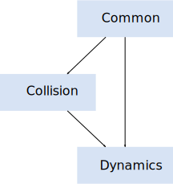

|
box2d 3.0.0
A 2D physics engine for games
|

|
|
box2d 3.0.0
A 2D physics engine for games
|
|
Box2D is a 2D rigid body simulation library for games. Programmers can use it in their games to make objects move in realistic ways and make the game world more interactive. From the game engine's point of view, a physics engine is just a system for procedural animation.
Box2D is written in portable C++. Most of the types defined in the engine begin with the b2 prefix. Hopefully this is sufficient to avoid name clashing with your game engine.
In this manual I'll assume you are familiar with basic physics concepts, such as mass, force, torque, and impulses. If not, please first consult Google search and Wikipedia.
Box2D was created as part of a physics tutorial at the Game Developer Conference. You can get these tutorials from the download section of box2d.org.
Since Box2D is written in C++, you are expected to be experienced in C++ programming. Box2D should not be your first C++ programming project! You should be comfortable with compiling, linking, and debugging.
Caution: Box2D should not be your first C++ project. Please learn C++ programming, compiling, linking, and debugging before working with Box2D. There are many resources for this on the net.
This manual covers the majority of the Box2D API. However, not every aspect is covered. Please look at the testbed included with Box2D to learn more.
This manual is only updated with new releases. The latest version of Box2D may be out of sync with this manual.
Please file bugs and feature requests here: Box2D Issues
You can help to ensure your issue gets fixed if you provide sufficient detail. A testbed example that reproduces the problem is ideal. You can read about the testbed later in this document.
There is also a Discord server and a subreddit for Box2D.
Box2D works with several fundamental concepts and objects. We briefly define these objects here and more details are given later in this document.
A shape is 2D geometrical object, such as a circle or polygon.
A chunk of matter that is so strong that the distance between any two bits of matter on the chunk is constant. They are hard like a diamond. In the following discussion we use body interchangeably with rigid body.
A fixture binds a shape to a body and adds material properties such as density, friction, and restitution. A fixture puts a shape into the collision system (broad-phase) so that it can collide with other shapes.
A constraint is a physical connection that removes degrees of freedom from bodies. A 2D body has 3 degrees of freedom (two translation coordinates and one rotation coordinate). If we take a body and pin it to the wall (like a pendulum) we have constrained the body to the wall. At this point the body can only rotate about the pin, so the constraint has removed 2 degrees of freedom.
A special constraint designed to prevent penetration of rigid bodies and to simulate friction and restitution. You do not create contact constraints; they are created automatically by Box2D.
This is a constraint used to hold two or more bodies together. Box2D supports several joint types: revolute, prismatic, distance, and more. Some joints may have limits and motors.
A joint limit restricts the range of motion of a joint. For example, the human elbow only allows a certain range of angles.
A joint motor drives the motion of the connected bodies according to the joint's degrees of freedom. For example, you can use a motor to drive the rotation of an elbow.
A physics world is a collection of bodies, fixtures, and constraints that interact together. Box2D supports the creation of multiple worlds, but this is usually not necessary or desirable.
The physics world has a solver that is used to advance time and to resolve contact and joint constraints. The Box2D solver is a high performance iterative solver that operates in order N time, where N is the number of constraints.
The solver advances bodies in time using discrete time steps. Without intervention this can lead to tunneling. 
Box2D contains specialized algorithms to deal with tunneling. First, the collision algorithms can interpolate the motion of two bodies to find the first time of impact (TOI). Second, there is a sub-stepping solver that moves bodies to their first time of impact and then resolves the collision.
Box2D is composed of three modules: Common, Collision, and Dynamics. The Common module has code for allocation, math, and settings. The Collision module defines shapes, a broad-phase, and collision functions/queries. Finally the Dynamics module provides the simulation world, bodies, fixtures, and joints. 
Box2D works with floating point numbers and tolerances have to be used to make Box2D perform well. These tolerances have been tuned to work well with meters-kilogram-second (MKS) units. In particular, Box2D has been tuned to work well with moving shapes between 0.1 and 10 meters. So this means objects between soup cans and buses in size should work well. Static shapes may be up to 50 meters long without trouble.
Being a 2D physics engine, it is tempting to use pixels as your units. Unfortunately this will lead to a poor simulation and possibly weird behavior. An object of length 200 pixels would be seen by Box2D as the size of a 45 story building.
Caution: Box2D is tuned for MKS units. Keep the size of moving objects roughly between 0.1 and 10 meters. You'll need to use some scaling system when you render your environment and actors. The Box2D testbed does this by using an OpenGL viewport transform. DO NOT USE PIXELS.
It is best to think of Box2D bodies as moving billboards upon which you attach your artwork. The billboard may move in a unit system of meters, but you can convert that to pixel coordinates with a simple scaling factor. You can then use those pixel coordinates to place your sprites, etc. You can also account for flipped coordinate axes.
Another limitation to consider is overall world size. If your world units become larger than 2 kilometers or so, then the lost precision can affect stability.
Caution: Box2D works best with world sizes less than 2 kilometers. Use b2World::ShiftOrigin to support larger worlds.
If you need to have a larger game world, consider using b2World::ShiftOrigin to keep the world origin close to your player. I recommend to use grid lines along with some hysteresis for triggering calls to ShiftOrigin. This call should be made infrequently because it is has CPU cost. You may need to store a physics offset when translating between game units and Box2D units.
Box2D uses radians for angles. The body rotation is stored in radians and may grow unbounded. Consider normalizing the angle of your bodies if the magnitude of the angle becomes too large (use b2Body::SetTransform).
Caution: Box2D uses radians, not degrees.
Advanced users may change the length unit modifying b2_lengthUnitsPerMeter. You can avoid merge conflicts by defining B2_USER_SETTINGS and providing b2_user_settings.h. See the file b2_settings.h for details.
Fast memory management plays a central role in the design of the Box2D API. So when you create a b2Body or a b2Joint, you need to call the factory functions on b2World. You should never try to allocate these types in another manner.
There are creation functions:
And there are corresponding destruction functions:
When you create a body or joint, you need to provide a definition. These definitions contain all the information needed to build the body or joint. By using this approach we can prevent construction errors, keep the number of function parameters small, provide sensible defaults, and reduce the number of accessors.
Since fixtures (shapes) must be parented to a body, they are created and destroyed using a factory method on b2Body:
There is also shortcut to create a fixture directly from the shape and density.
Factories do not retain references to the definitions. So you can create definitions on the stack and keep them in temporary resources.